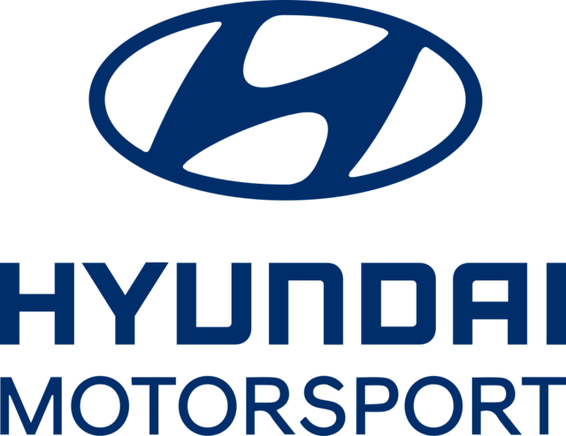

- -Kia Motors
- -Lg Electronic
- -Hyundai
 - -Samnsung


La formulación y aplicación de la política comercial incumbe al Ministerio de Comercio, Industria y Energía (MOTIE). La Korean Trade Commisión (KTC), dependiente del MOTIE, asesora en materia comercial e investiga prácticas comerciales desleales haciendo el seguimiento de los compromisos en la OMC. Los intercambios comerciales con el exterior se encuentran regulados por dos leyes principales: - La Foreign Trade Act regula la exportación e importación de bienes. La Customs Act regula el despacho aduanero y el cobro de aranceles. - La Trade Remedy Act (llamado oficialmente Act on the Investigation of Unfair International Trade Practices & Remedy against Injury to Industry) y el Trade Remedy Decree regulan la investigación y supervisión de prácticas comerciales desleales. El Enforcement Decree of Foreign Trade Act es un decreto que contiene el desarrollo del Foreign Trade Act. Corea del Sur inició a partir del año 2000 un proceso de apertura mediante la firma de acuerdos de libre comercio bilaterales y regionales. El ALC con la UE se aplica desde julio de 2011, siendo el primer acuerdo de este tipo de la UE con un país asiático. El acuerdo se caracteriza por su carácter global y su gran alcance, así como por la rapidez a la que deben suprimirse las barreras comerciales, principalmente las arancelarias, proceso que culminó en 2019, una vez que han finalizado los periodos transitorios. Está en vigor un acuerdo de cooperación y asistencia administrativa mutua en materia aduanera, firmado a finales de los años noventa por ambos países para favorecer las relaciones comerciales y facilitar la gestión de los procedimientos administrativos. Todas las mercancías pueden ser importadas libremente, existiendo el sistema electrónico de intercambio de datos (EDI) presente en todo el país, el cual permite la declaración de importaciones a través de Internet. La excepción más general es la de los productos que puedan entrar en conflicto en materia de seguridad nacional, salud pública (como es el caso de los productos farmacéuticos, cosméticos o el equipamiento médico) y medio ambiente (por ejemplo, la importación de residuos), que requieren la aprobación del Ministerio de Medio Ambiente. La concesión de licencias corresponde a la agencia o administración correspondiente según la naturaleza de la mercancía, siendo extremadamente estrictos con la producción animal y vegetal, y la destinada a consumo humano. La Korean Customs Service publica anualmente una lista negativa, conocida también como Noticia de Exportación e Importación, donde se enumeran las mercancías sometidas a alguna restricción o prohibición de entrada al país.
| Exportación | Importación |
|---|---|
| Equipo Electronico | Petrolio Crudo |
| Maquinaria y calderas | circuitos integrados |
| vehiculos y travías | gas petrolio |
| plastico | petrolio refinado |
| combustibles minerales | vehiculos |
| Puertos | |
|---|---|
| Aeropuerto de jeju | Puertos de Busan |
| Puertos de Incheon |
Estas Empresas esta afiliadas al Gobierno de Corea de Sur son las sig: